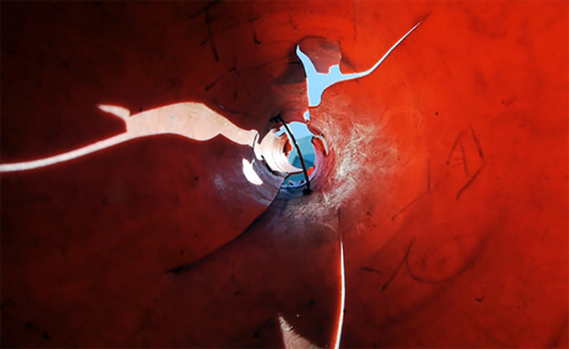
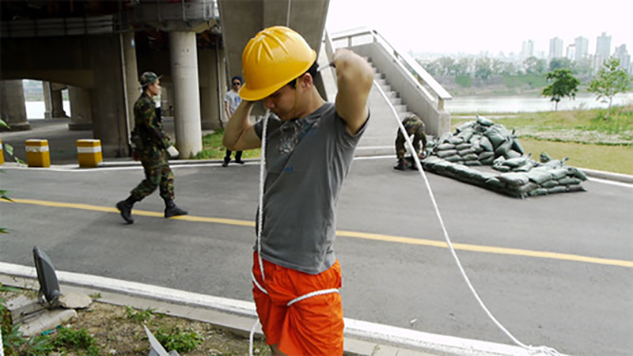
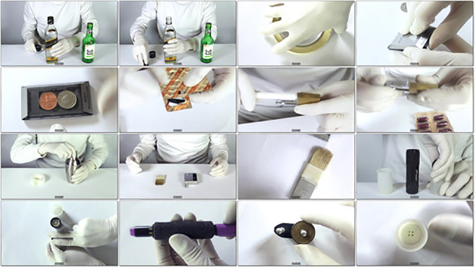
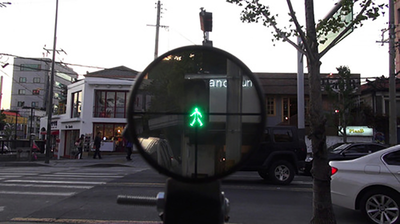
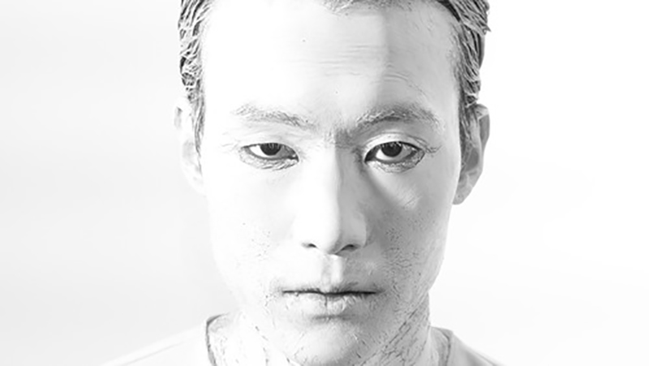

- 2016. 8. 5. 20:00
- 23층
- 김기범 Gibum-Gim
- 객체 Object에 개입해 역설적 상황을 만들고, 그 상황의 중심점을 발견해 (불안한) 균형을 맞춰나간다. 이 과정은 무거운 어른과 가벼운 아이가 시소에 앉아 평행을 맞추는 모습과 닮았다. 이 같은 개입을 통해, 객체가 어떠한 사건 혹은 징후로 바뀔 가능성에 주목한다.
- <라바콘 Traffic cone>, 10'33'', 2010
- 쉽게 지나치는 일상적 사물 ‘라바콘’의 시점에서 일상을 담는다.
- <노들까페 Nodel café>, 6'53'', 2011
- 한강의 불협한 위치에 놓은 건축물 노들카페. 이의 가치를 어떻게든 느끼고 싶었다.
- <딱!딱!딱! Tight!Tight!Tight!>, 3'35'', 2012
- 제 짝이 아닌 오브제들의 비장한 만남.
- <ZF39>,9'9'', 2012
- 스코프를 통해 보는 풍경에 대한 흥미로부터 출발한 작업. 스코프를 직구하려는 시도에서 발생한 과정을 통해, 오브제의 기행이 드러난다.
- <볼레로 Bolero>, 14'58'', 2014
- 누구나 아는 ‘볼레로’의 멜로디. 볼레로의 작곡가 모리스 라벨은 이 곡이 ‘커다란 구조체계’라고 설명한다. 그가 말한 구조를 떠올리며 만든 뮤직비디오.
-

-

-

-

-
